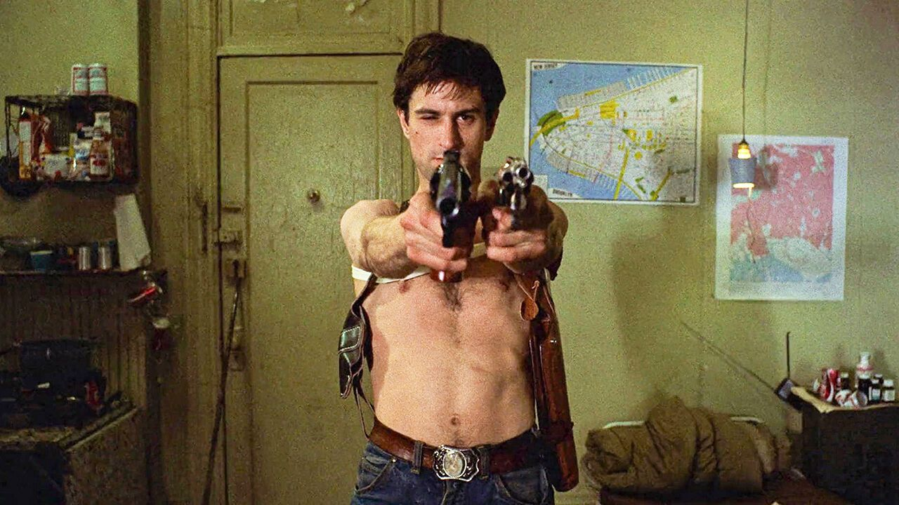
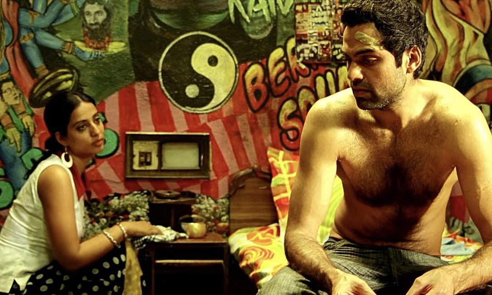
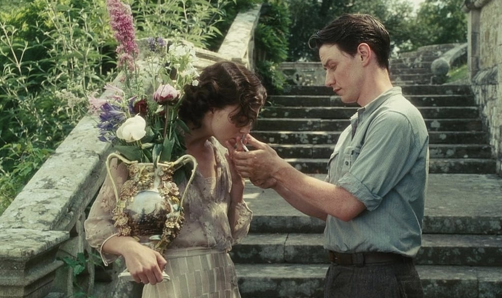
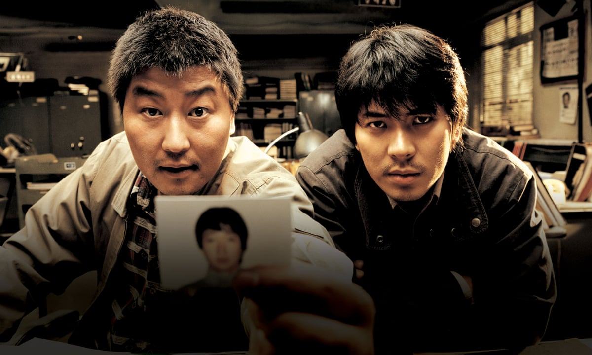
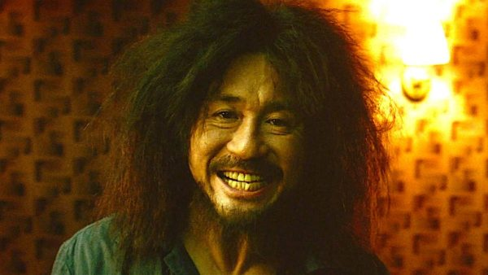
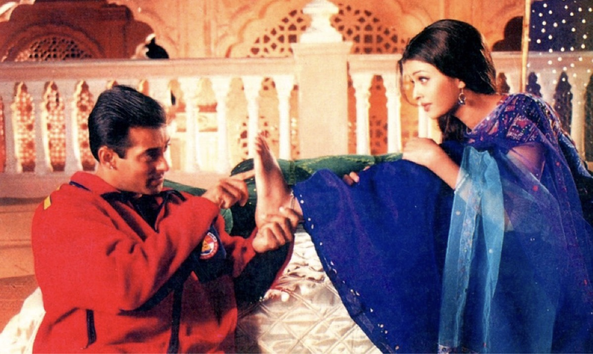
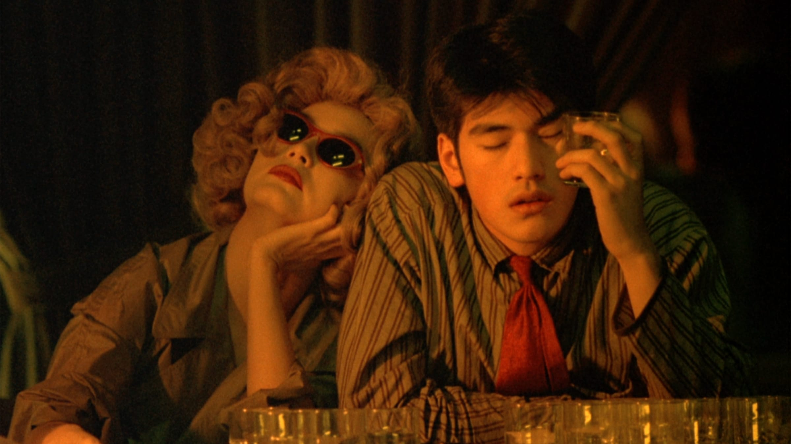

Lootera is my favorite movie of all time because of its beautiful storytelling, emotional depth, and unforgettable performances. Set in 1950s India, the film tells a touching story of love, betrayal, forgiveness, and hope. Every scene is carefully crafted, and the music perfectly matches the emotions of the characters. It is a slow-paced film that stays with me long after it ends, making it a masterpiece in my eyes.
Taxi Driver is a classic psychological drama that explores loneliness, isolation, and the darker side of the human mind. The story follows Travis Bickle, a lonely taxi driver whose view of the world becomes increasingly disturbed. With its brilliant acting, unforgettable dialogue, and thought-provoking themes,the film remains one of the greatest and most influential movies ever made.

Dev.D is a bold and modern retelling of the classic story of Devdas. It explores love, heartbreak, addiction, and self-discovery in a unique and creative way. The film stands out because of its energetic direction, colorful visuals, and outstanding soundtrack. Its unconventional storytelling and memorable characters make it one of the most original films I have ever watched.

Atonement is a powerful romantic drama that tells a heartbreaking story about love, guilt, and the consequences of a single mistake. Set against the backdrop of World War II, the film follows lives that are forever changed by one false accusation. With breathtaking cinematography, emotional performances, and a moving story, it is a film that leaves a lasting impression.

Memories of Murder is an unforgettable crime thriller inspired by real-life events in South Korea. The story follows detectives trying to solve a series of mysterious murders while dealing with frustration, failure, and uncertainty. The film perfectly balances suspense, drama, and moments of humor, creating a realistic and emotional experience that keeps me engaged from beginning to end.

Oldboy is a haunting psychological thriller directed by Park Chan-wook. The story follows a man who is imprisoned for years without explanation and suddenly released, leading him on a relentless search for the truth. With unforgettable cinematography, brilliant direction, and one of the most shocking twists in cinema, the film explores revenge, guilt, and fate in a deeply emotional and unforgettable way. Every scene is crafted with incredible style, making it one of the greatest films I have ever watched.

The Wolf of Wall Street is an energetic and wildly entertaining film directed by Martin Scorsese. It tells the true story of Jordan Belfort's rise and fall through greed, ambition, and excess. Leonardo DiCaprio delivers an unforgettable performance, while the fast-paced direction, sharp humor, and nonstop energy make every scene captivating. Beneath its glamorous lifestyle, the film offers a powerful look at the consequences of corruption and unchecked desire.
October (2018) is a meditative drama that finds extraordinary meaning in ordinary life. Instead of relying on conventional romance or melodrama, the film unfolds through quiet moments, silence, and emotional restraint. Its understated storytelling, naturalistic cinematography, muted color palette, and gentle pacing create an atmosphere that feels deeply intimate and reflective. Exploring themes of love, grief, acceptance, and human connection, October proves that powerful emotions can emerge from the simplest moments, making it one of the most distinctive and contemplative films in modern Indian cinema.
Pulp Fiction (1994) is a groundbreaking crime film that reshaped modern cinema through its non-linear storytelling, unforgettable dialogue, and unforgettable cast of eccentric characters. Quentin Tarantino masterfully intertwines multiple stories filled with dark humor, tension, violence, and unexpected moments of humanity. Every scene feels purposeful, balancing stylish filmmaking with sharp writing and memorable performances. Its influence on filmmaking remains immense, making Pulp Fiction one of the most iconic and celebrated films ever made.
Life of Pi is a visually breathtaking adventure that blends survival, spirituality, and imagination into an unforgettable cinematic experience. Directed with remarkable artistry, the film combines stunning visual effects with heartfelt storytelling, exploring themes of faith, hope, resilience, and the power of belief. As Pi's extraordinary journey unfolds across the endless ocean, the film raises profound questions about truth, storytelling, and the human spirit, making it both emotionally moving and visually mesmerizing.
Hum Dil De Chuke Sanam (1999) is a timeless romantic drama celebrated for its emotional depth, breathtaking visuals, and unforgettable music. Blending passion, heartbreak, sacrifice, and self-discovery, the film explores the complexities of love and the difficult choices it often demands. Rich in vibrant cinematography and traditional Indian aesthetics, it balances grand emotions with quiet moments of reflection, creating a story that remains one of the most beloved and enduring romances in Indian cinema.

Chungking Express (1994) is a dreamy and melancholic romantic film about loneliness, love, and the unexpected connections between people.
